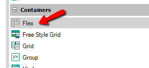

Flex Layout container aims to offer more ways to lay out controls in a container even if the control size is unknown. Because of this, it offers more efficient ways to achieve responsive user interfaces than existing table containers. Why being flex is important: The canonical sampleThere are many simple cases where you don't know the control size because the size depends on the content of the control. The canonical sample is when you have for example several Textblocks to show in a row. The Width of the Textblocks depends on the captions of the controls, so depending on those captions all the text blocks can fit the screen width or not. For example when you have some data like an address but using several attributes and you want to render something like: Garcia Morales 1235 Zip 11300 You can drag and drop the attributes CustomerAddress, CustomerNumber, CustomerZipNumber, without giving width to each attribute because actually, you don't know the length of each data. Note that using the Abstract layout each control in the table has a predefined width (given in percentage values), although it could be changed using your own Theme Classes. Through the Flex Table, it's the control size inside the cell which governs the column width. Check the browsers support for this feature. How to use it?Flex control is available to be dragged and dropped from the Toolbox in the same way as Canvas and Tables containers.  Also, Flex Grid is a value offered by the Grids Control Type property and the Free Style Grids Custom Render property (for Web applications). Notes
AvailabilityAvailable since GeneXus 15 upgrade 12. Flex Layout PropertiesThe Flex Table container became a standard for web interfaces, and also for mobile layouts. In GeneXus, you have it on both platforms: Web and Mobile.
|